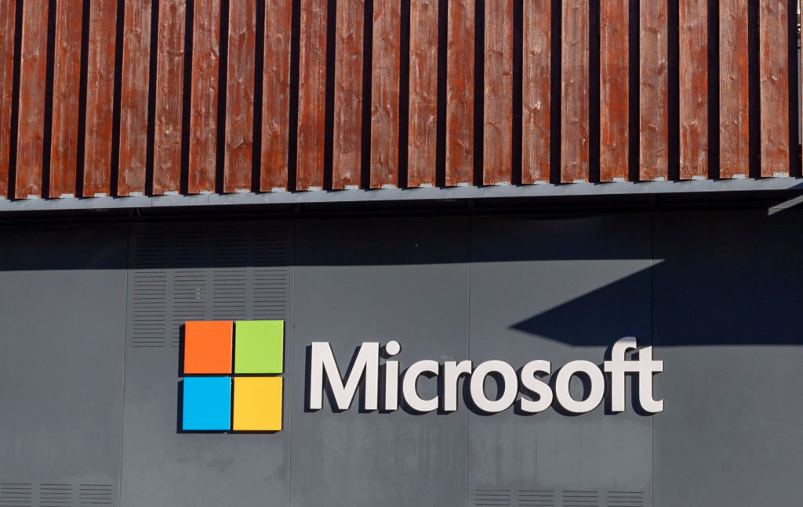

Technology · 14 Nov 2026
Microsoft’s global outage may be worse than Amazon's or CrowdStrike's, expert says

Governments, hospitals, courts scrambled by global Microsoft outage.
Multiple independent publishers are reporting on the same development: Microsoft’s global outage may be worse than Amazon's or CrowdStrike's, expert says.
The available reports place the development in the Technology category. The accounts were compared for agreement on the central event rather than simply shared names or broad topics.
One of the available reports describes the development this way: Governments, hospitals, courts scrambled by global Microsoft outage.
Readers should consult the linked source reports for additional context, updates and details that may change as the story develops.
Sources
This article was produced by the C. O. Eric AI Newsroom from the cited sources. It is published only after automated evidence and safety checks.